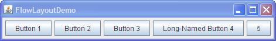
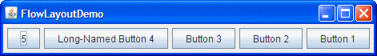

A layout manager is an object that implements the LayoutManager interface* and determines the size and position of the components within a container. Although components can provide size and alignment hints, a container's layout manager has the final say on the size and position of the components within the container.
GroupLayout layout manager combined with a builder tool to lay out your GUI. One such builder tool is the
NetBeans IDE. Otherwise, if you want to code by hand and do not want to use GroupLayout, then GridBagLayout is recommended as the next most flexible and powerful layout manager.
If you are interested in using JavaFX to create your GUI, see Working With Layouts in JavaFX.
This section discusses some of the common tasks related to using layout managers:
As a rule, the only containers whose layout managers you need to worry about are
JPanels and
content panes. Each JPanel object is initialized to use a FlowLayout, unless you specify differently when creating the JPanel. Content panes use BorderLayout by default. If you do not like the default layout manager that a panel or content pane uses, you are free to change it to a different one. However, unless you are using JToolBar, the FlowLayout and BorderLayout managers are only useful for prototyping. Any real application will need to reset the layout manager. Again, you should use an appropriate tool to do this, rather than coding the manager by hand.
You can set a panel's layout manager using the JPanel constructor. For example:
JPanel panel = new JPanel(new BorderLayout());
After a container has been created, you can set its layout manager using the setLayout method. For example:
Container contentPane = frame.getContentPane(); contentPane.setLayout(new FlowLayout());
Although we strongly recommend that you use layout managers, you can perform layout without them. By setting a container's layout property to null, you make the container use no layout manager. With this strategy, called absolute positioning, you must specify the size and position of every component within that container. One drawback of absolute positioning is that it does not adjust well when the top-level container is resized. It also does not adjust well to differences between users and systems, such as different font sizes and locales.
When you add components to a panel or content pane, the arguments you specify to the add method depend on the layout manager that the panel or content pane is using. In fact, some layout managers do not even require you to add the component explicitly; for example, GroupLayout. For example, BorderLayout requires that you specify the area to which the component should be added (using one of the constants defined in BorderLayout) using code like this:
pane.add(aComponent, BorderLayout.PAGE_START);
The how-to section for each layout manager has details on what, if any, arguments you need to specify to the add method. Some layout managers, such as GridBagLayout and SpringLayout, require elaborate setup procedures. Many layout managers, however, simply place components based on the order they were added to their container.
Swing containers other than JPanel and content panes generally provide API that you should use instead of the add method. For example, instead of adding a component directly to a
scroll pane (or, actually, to its viewport), you either specify the component in the JScrollPane constructor or use setViewportView. Because of specialized API like this, you do not need to know which layout manager (if any) many Swing containers use. (For the curious: scroll panes happen to use a layout manager named ScrollPaneLayout.)
For information about how to add components to a specific container, see the how-to page for the container. You can find the component how-to pages using How to Use Various Components.
Sometimes you need to customize the size hints that a component provides to its container's layout manager, so that the component will be laid out well. You can do this by specifying one or more of the minimum, preferred, and maximum sizes of the component. You can invoke the component's methods for setting size hints — setMinimumSize, setPreferredSize, and setMaximumSize. Or you can create a subclass of the component that overrides the appropriate getter methods — getMinimumSize, getPreferredSize, and getMaximumSize. Here is an example of making a component's maximum size unlimited:
component.setMaximumSize(new Dimension(Integer.MAX_VALUE,
Integer.MAX_VALUE));
Many layout managers do not pay attention to a component's requested maximum size. However, BoxLayout and SpringLayout do. Furthermore, GroupLayout provides the ability to set the minimum, preferred or maximum size explicitly, without touching the component.
Besides providing size hints, you can also provide alignment hints. For example, you can specify that the top edges of two components should be aligned. You set alignment hints either by invoking the component's setAlignmentX and setAlignmentY methods, or by overriding the component's getAlignmentX and getAlignmentY methods. Although most layout managers ignore alignment hints, BoxLayout honors them. You can find examples of setting the alignment in How to Use BoxLayout.
Three factors influence the amount of space between visible components in a container:
BoxLayout. See How to Use BoxLayout for examples of using invisible components.This
website
is written in English, with text that runs from left to right, and then top to bottom. However, many other languages have different orientations. The componentOrientation property provides a way of indicating that a particular component should use something different from the default left-to-right, top-to-bottom orientation. In a component such as a radio button, the orientation might be used as a hint that the look and feel should switch the locations of the icon and text in the button. In a container, the orientation is used as a hint to the layout manager.
To set a container's orientation, you can use either the Component-defined method
setComponentOrientation or, to set the orientation on the container's children as well,
applyComponentOrientation. The argument to either method can be a constant such as ComponentOrientation.RIGHT_TO_LEFT, or it can be a call to the ComponentOrientation method
getOrientation(Locale). For example, the following code causes all JComponents to be initialized with an Arabic-language locale, and then sets the orientation of the content pane and all components inside it accordingly:
JComponent.setDefaultLocale(new Locale("ar"));
JFrame frame = new JFrame();
...
Container contentPane = frame.getContentPane();
contentPane.applyComponentOrientation(
ComponentOrientation.getOrientation(
contentPane.getLocale()));
Here are two pictures showing how FlowLayout lays out components in containers that are exactly the same, except for their orientation.

Default orientation (left-to-right)

Right-to-left orientation
The standard layout managers that support component orientation are FlowLayout, BorderLayout, BoxLayout, GridBagLayout, and GridLayout.
Layout managers have different strengths and weaknesses. This section discusses some common layout scenarios and which layout managers might work for each scenario. However, once again, it is strongly recommended that you use a builder tool to create your layout managers, such as the NetBeans IDE Matisse GUI builder, rather than coding managers by hand. The scenarios listed below are given for information purposes, in case you are curious about which type of manager is used in different situations, or in case you absolutely must code your manager manually.
If none of the layout managers we discuss is right for your situation and you cannot use a builder tool, feel free to use other layout managers that you may write or find. Also keep in mind that flexible layout managers such as GridBagLayout and SpringLayout can fulfill many layout needs.
GridLayout or BorderLayout. Otherwise, BorderLayout or GridBagLayout might be a good match.
If you use BorderLayout, you will need to put the space-hungry component in the center. With GridBagLayout, you will need to set the constraints for the component so that fill=GridBagConstraints.BOTH. Another possibility is to use BoxLayout, making the space-hungry component specify very large preferred and maximum sizes.
JPanel to group the components and using either the JPanel's default FlowLayout manager or the BoxLayout manager. SpringLayout is also good for this.GridLayout is perfect for this.BoxLayout is perfect for this.SpringLayout is a natural choice for this. The SpringUtilities class used by several Tutorial examples defines a makeCompactGrid method that lets you easily align multiple rows and columns of components.GridBagLayout or SpringLayout, or grouping the components into one or more JPanels to simplify layout. If you take the latter approach, each JPanel might use a different layout manager.Other third party layout managers have been created by the Swing community, to complement those provided by the Java platform. The following list is by no means definitive, but the layout managers listed below are the most popular:
*Way back in JDK 1.1 a second interface, LayoutManager2, was introduced. LayoutManager2 extends LayoutManager, providing support for maximum size and alignment. LayoutManager2 also adds the methods addLayoutComponent, that takes an Object, and invalidateLayout. Layout managers also need the notifications provided by LayoutManager2, so any modern layout manager will need to implement it.